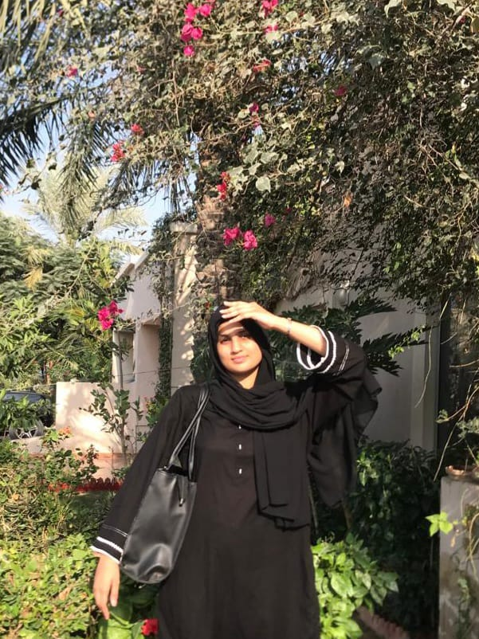

Interests
In my free time, I enjoy staying active and engaged with various hobbies. One of my greatest passions is playing sports, particularly table tennis and throwball. Both sports challenge my reflexes and coordination, while providing a fun and competitive outlet. When I am not on the court, I love reading articles on diverse topics, from technology to personal development, as it helps broaden my knowledge and perspective. Additionally, I find solace in listening to music, which serves as a source of relaxation and inspiration. Music helps me unwind and stay motivated, whether I'm working on a project or simply enjoying some quiet time.
Skills
Programming Skills
- Programming Languages: C,HTML,CSS
- MS Excel,word,powerpoint
know how to use
soft Skills
- well spoken communication
- Teamwork
- event management
Vision for the Future
I see myself as a strong, independent woman running my own business and working remotely as a financial security analyst. This path aligns with my passion for growth, ambition, and the freedom to create my own success.
Inspiration
The greatest inspiration in my life has always been my mother; she is my true hero. Her strength, resilience, and unwavering support have shaped who I am today. Through every challenge, she has been a constant source of encouragement and wisdom, showing me what it means to be strong, compassionate, and dedicated. Her actions have taught me the value of hard work and kindness, and her love has given me the confidence to pursue my dreams. I am endlessly grateful for her presence in my life, as she continues to inspire me every day to be my best self..
About Me
I am a passionate and eager learner with a strong desire to grow. I completed my O Levels in 2022 and recently graduated from A Levels. Currently, I am a cybersecurity student at FAST.
Education
- Cyber Security - FAST NUCE KARACHI, 2024
- O levels - Bharia college Karachi
- A levels- Eden college
Good Memory
I have many cherished memories, but nothing brings a smile to my face quite like the long road trips with my family and the times spent hanging out with friends. Those moments are filled with joy, laughter, and a sense of freedom that I will always treasure.